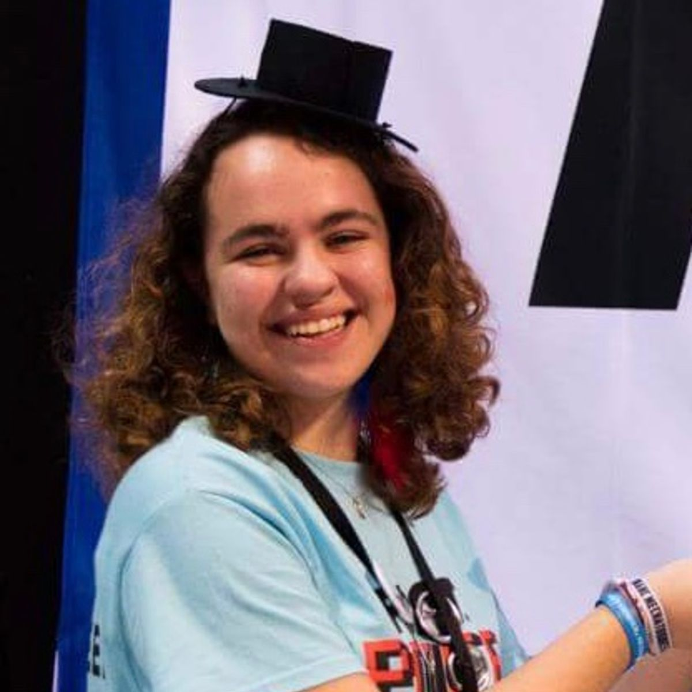
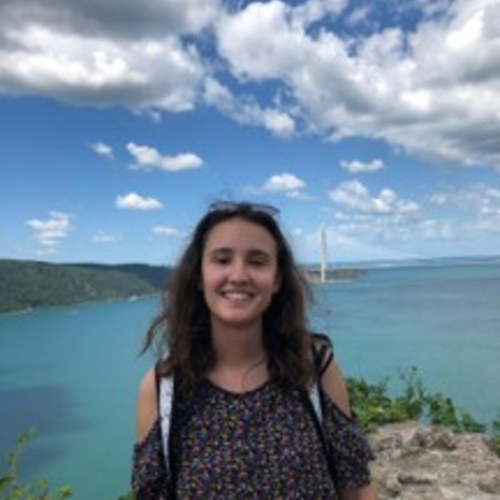
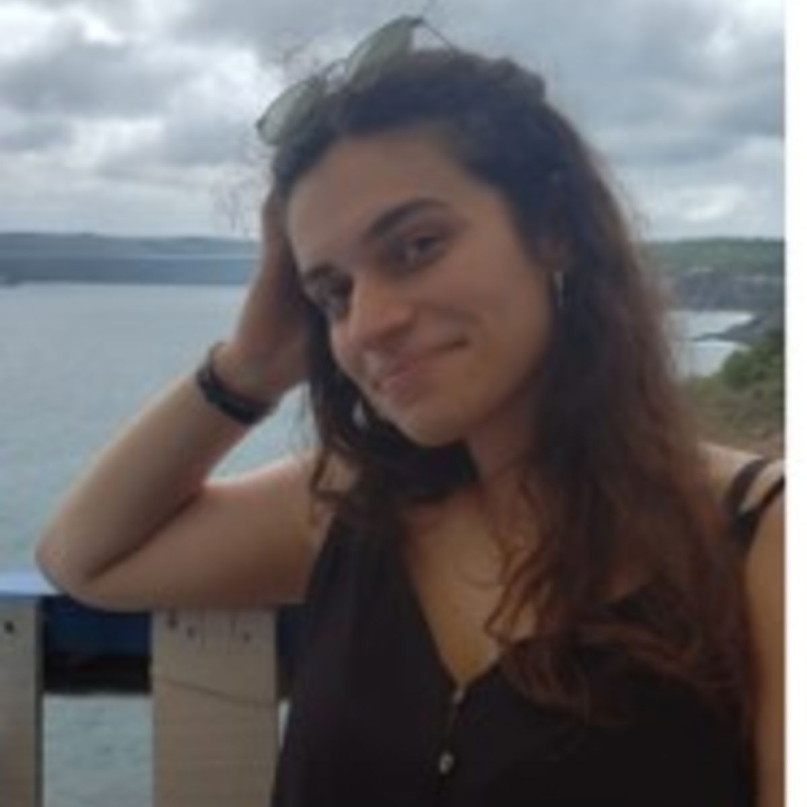
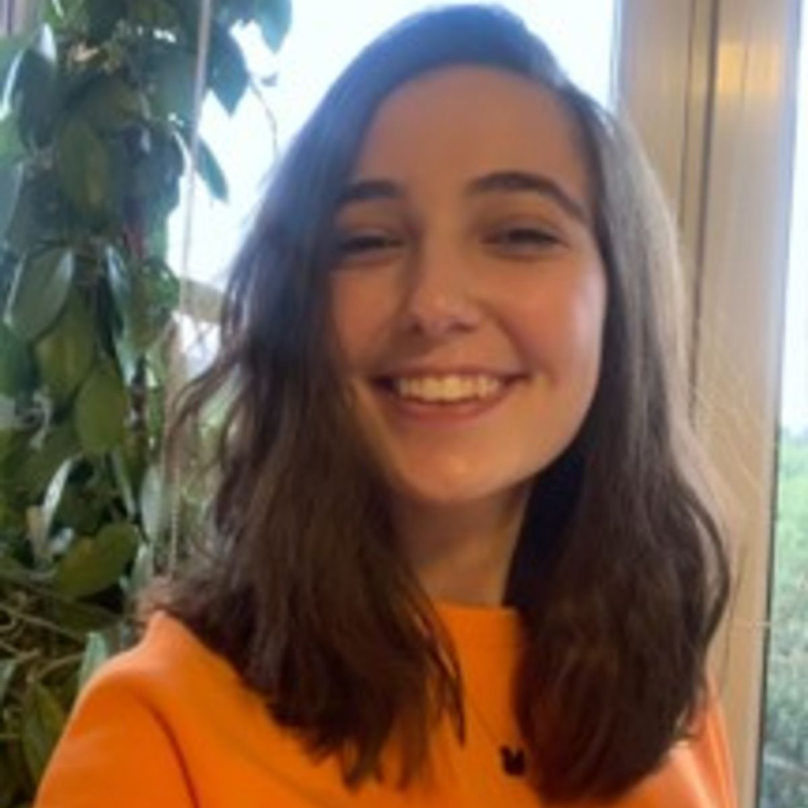
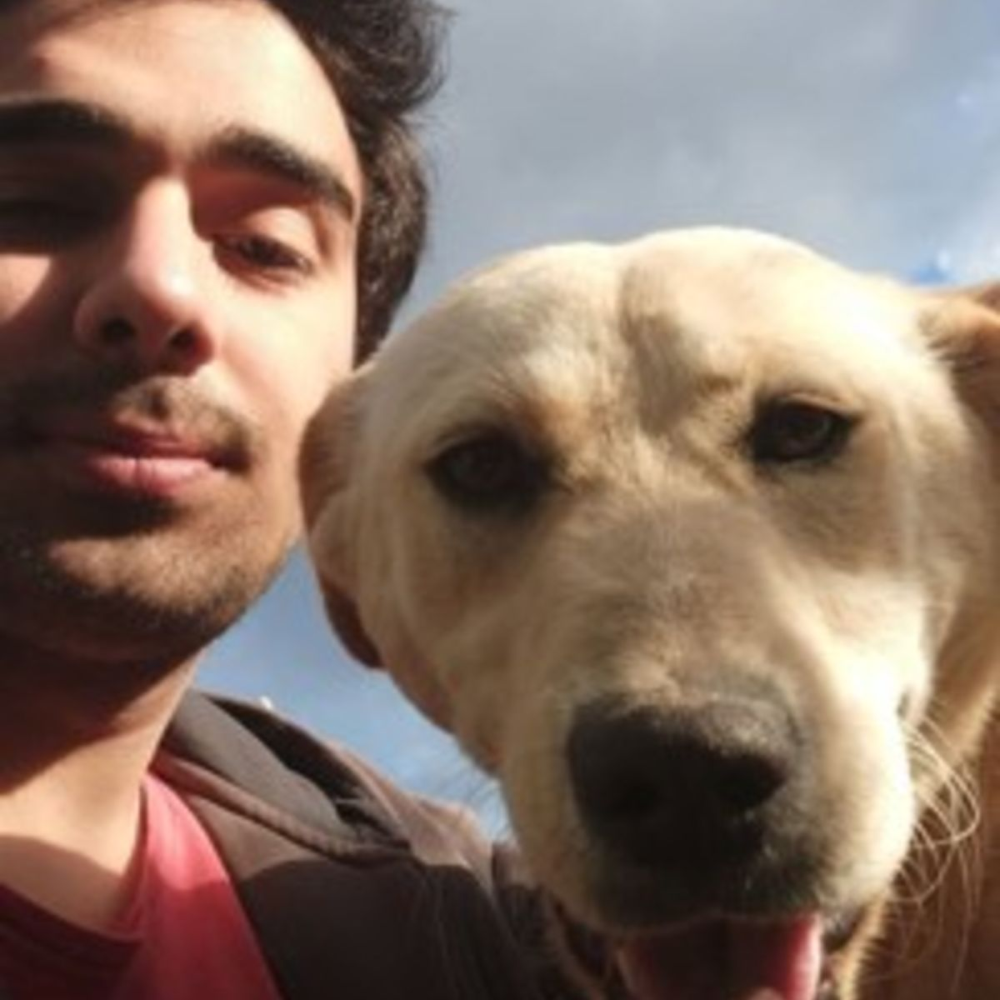
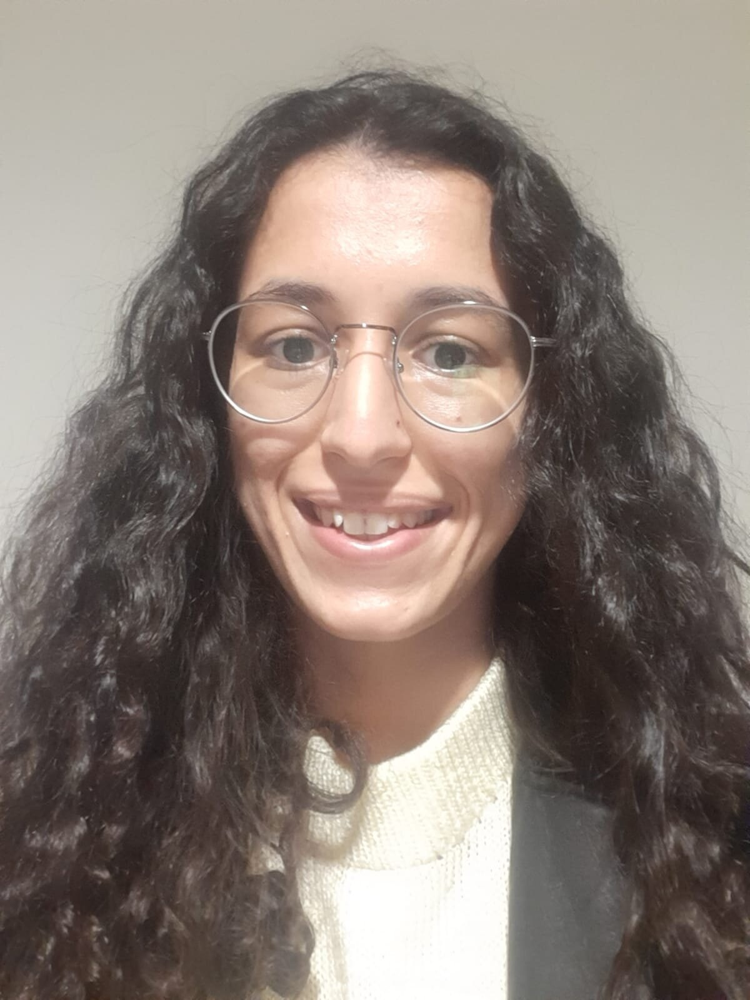

CS 101: Merhaba, Dünya!
CS 101: Merhaba, dünya! Türkiye’deki lise öğrencileri arasında programlama eğitimini ve takip eden profesyonel, teknik, sosyal ve kişisel becerileri teşvik etmek için dizayn edilmiş, Koç Üniversitesi öğrencileri tarafından organize edilen, 8 haftalık online bir programdır. CS 101 genel kanının aksine programlama eğitiminin kişilerin yatkın olduğu alanlardan bağımsız olarak problem çözme, yaratıcı ve analitik düşünme becerilerine katkısı olduğuna inanır, öğrencilerinin bu alanlardaki özgüvenlerini artırmayı hedefler.
CS 101 materyalleri programa katılan öğrencilerin çok az ya da hiç programlama bilmediği, Python’a aşina olmadığı varsayımı ile hazırlanmıştır.
Şu an için önceden belirlenmiş liselerle işbirliği içinde yürütülen programın gün geçtikçe daha çok öğrenci ve eğitmene ulaşması en büyük hayalimizdir.
Programın işleyişi, konular ve lojistik bilgiler için Müfredat‘ı inceleyebilirsiniz.
Programın Amacı
- Herkes için güvenli, eğlenceli ve verimli bir öğrenme ve öğretme ortamı oluşturmak.
- Öğrencilere ilgi alanlarında kullanabilecekleri ve program boyunca kazandıkları becerileri kendi başlarına ilerletebilecekleri pratik becerileri kazandırmak.
- Öğrencilerin fen, teknoloji, mühendislik ve matematik (STEM) alanlarındaki ilgilerini desteklemek.
- Fen, teknoloji, mühendislik ve matematik alanında cinsiyet eşitliğine katkıda bulunmak.
- Kaliteli ve açık kaynaklı Türkçe programlamaya giriş içeriklerine katkıda bulunmak.
- Hepsi üniversite öğrencisi olan eğitmenlere akranlarıyla işbirliği içinde ders vermek, materyal hazırlamak gibi deneyimleri kazanarak öğretim becerilerini geliştirebilecekleri bir ortam sunmak.
Ekibimiz
CS 101 ekibi, akranlar arası öğretme ve öğrenmenin değerine inanan 16 üniversite öğrencisinden oluşur. CS 101 ekibimizle tanışın:
|  Gül Sena Altıntaş |  Necla Mutlu |
 Ahmet Uysal
Ahmet Uysal
|
 İrem Karaca
İrem Karaca
|
|---|---|---|---|
|  Demet Tümkaya |
 Başak Çobantepesi
Başak Çobantepesi
|
 Rıdvan Balamur
Rıdvan Balamur
|
 İdil Defne Çekin
İdil Defne Çekin
|
|  Oya Suran |  Özgün Ozan Nacitarhan | Yekta Kocaoğullar |
 Arda Enfiyeci
Arda Enfiyeci
|
|  Burcu Yıldız |
 Mustafa Ahmet Yücel
Mustafa Ahmet Yücel
|
 Doğa Ege İnhanlı
Doğa Ege İnhanlı
|
 Eren Çetin
Eren Çetin
|